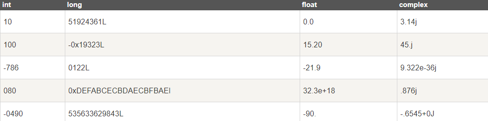
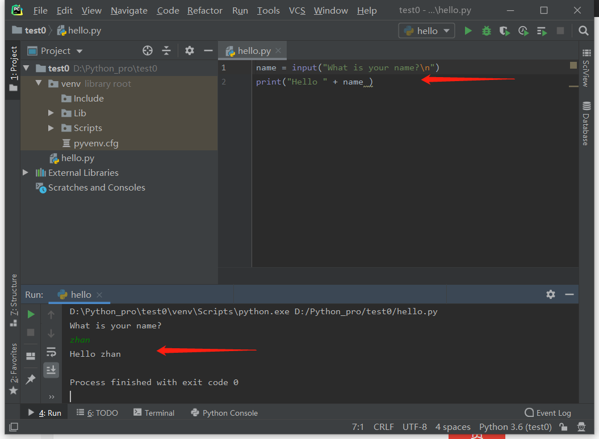
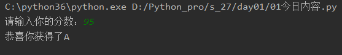

变量，是用于在内存中存放程序数据的容器
计算机的核心为“计算”，计算便需要数据源，数据源要存在内存中方便使用，这时就要用到变量，比如把某人吗名字，年龄等信息存在内存中，就需要设置“变量名=值”，例如
name="李华"
age=18之后需要取用的时候，直接调用变量名
print(name)
print(age)驼峰体
AgeOfOldboy = 56 NumberOfStudents = 80下划线
age_of_oldboy = 56 number_of_students = 80常规使用
name1 = '小明'
name2 = '小红'另外还可以在内存中开辟了两个空间,分别给不同的内存地址贴上不同的标签
name1 = '小明'
name2 = name1常量即指不变的量，如Π为 3.141592653…, 或在程序运行过程中不会改变的量，在Python中没有一个专门的语法代表常量，程序员约定俗成用变量名全部大写代表常量，常量一般用在配置文件中。
随着写的代码行数的增多，有些功能必须要为其添加相应的注释，以便在后期维护时，更快的定位维护位置。
代码注释分单行和多行注释， 单行注释用#，多行注释可以用三对双引号
# 这是单行注释
'''
这种的是多行注释, 什么是多行注释啊,其实很简单就是咱们注释的内容可以
进行换行
''' 注释的原则
在内存中存储的数据可以有多种类型。
例如，一个人的年龄可以用数字来存储，他的名字可以用字符来存储。
Python 定义了一些标准类型，用于存储各种类型的数据。
Python有五个标准的数据类型：
此次仅举例简单的数据类型：
Python支持四种不同的数字类型：
int（有符号整型）
long（长整型[也可以代表八进制和十六进制]）
float（浮点型）
complex（复数）
示例

整型的+，-，*,/
a = 5
b = 2
print(a + b, a - b, a * b, a / b)赋值是一个等于号，比较中的等于是两个等于号
字符串或串(String)是由数字、字母、下划线组成的一串字符。
一般记为 :
s="Alex"
a = "my name's zhan"
print(a)
输出>>> my name's zhan
字符串拼接
a = "小明"
print(a * 3)
print(a + a)
输出>>> 小明小明小明 小明小明
布尔值中一共分为两个状态
True 就是真
False 就是假
例如我们想让计算机帮我们计算一下两个数的比较大小
print(3>7)
结果: False
print(7>3)
结果: True
若你的程序要接收用户指令，可以用input语法：
name = input("What is your name?")
print("Hello " + name )
结果输出

注意，input()方法接收的只是字符串，即使你输入的是数字，它也会按字符串处理
if 条件:
满足条件后要执行的代码
举例：
age = 18
if age == 18:
print("判断正确")
if 条件:
满足条件执行代码
else:
条件不满足执行代码
举例：
if 3 > 2:
print("3大于2")
else:
print("3不大于2")
一行的写法
print("3大于2") if 3 > 2 else print("3不大于2")
if 条件:
满足条件执行代码
elif 条件:
上面的条件不满足就走这个
elif 条件:
上面的条件不满足就走这个
elif 条件:
上面的条件不满足就走这个
else:
上面所有的条件不满足就走这段
举例
score = int(input("请输入你的分数："))
if 100 >= score >= 95:
print("恭喜你获得了A")
elif 94 >= score >= 80:
print("恭喜你获得了B")
elif 79 >= score >= 60:
print("你获得了C")
elif 0 <= score < 60:
print("你获得了D")
else:
print("分数不在范围")

if 条件:
结果
if 条件:
结果
结果
举例
if 3 > 2:
print("第一条件成立")
if 4 > 2:
str_f = input("第二条件是否成立？")
print(str_f)
print("第三条件成立")